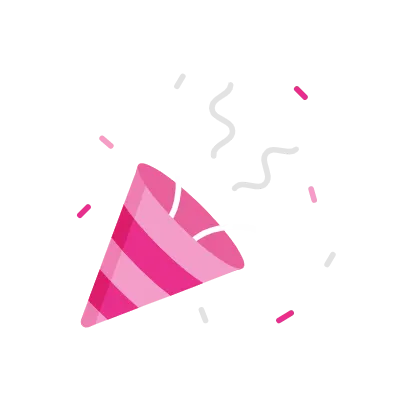

BACK
RACHA DIARIA
0
DÍAS
3
META
7
META
14
META
30
MÁX
BIRTHDAY
OCUPATION

NACIONALITY
BANK
-
INFO PERSONAJE
CUMPLEAÑOS
-
OCUPACIÓN
-
NACIONALIDAD
-
BANCO
-
ÚLT. SESIÓN
-
TIEMPO JUGADO
-
RACHA
0 DÍAS
TUS PERSONAJES
SLOT LOCKED
SLOT 1
SLOT LOCKED
SLOT 2
SLOT LOCKED
SLOT 3
SLOT LOCKED
SLOT 4
SLOT LOCKED
SLOT 5
CHOOSE ONE SLOT
BACK
Crea tu personaje
Name
Last Name
Birthday
Country
Male
Female
¡ALL READY!
BACK
ÚLTIMA UBICACIÓN
Jugadores
--/--
Staff online
--
Latencia
-- MS
Uptime
--
Hora RP
--:--
Clima actual
No disponible
Latencia
-- MS
Versión
--
Información en tiempo real del servidor antes de despertar.
DESPERTARSE
¡YOU HAS UNLOCKED AN SLOT!

Continuar

Creating character